스냅위젯에서 위젯 만들기
스냅위젯(snapwidget.com)에 로그인한 뒤 새 위젯을 생성합니다.
홈 화면에서 [New Widget] 클릭
스냅위젯에 로그인하면 보이는 Home 화면 오른쪽 위의 파란색 + New Widget 버튼을 눌러주세요.
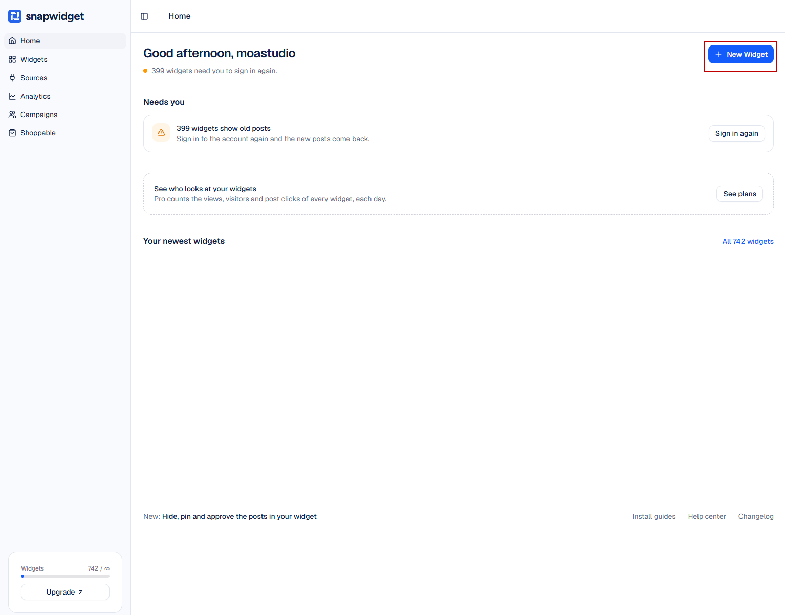
레이아웃은 [Grid] 선택
Step 1 of 2 창이 열리면 Social feeds 항목에서 Grid를 선택해주세요.
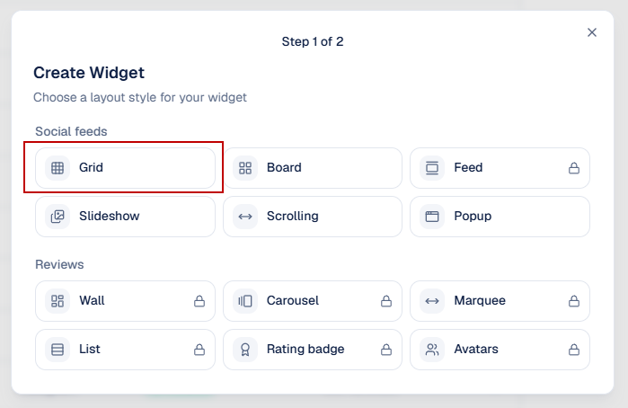
인스타그램 계정 연결
위젯에 보여줄 인스타그램 계정을 스냅위젯에 연결합니다. 처음 한 번만 하면 되고, 이후에는 연결된 계정을 선택만 하면 됩니다.
[Connect New Account] 클릭
Step 2 of 2 창에서 연결할 계정을 고르는 화면이 나옵니다. 아직 연결된 계정이 없다면 아래쪽 + Connect New Account를 눌러주세요.
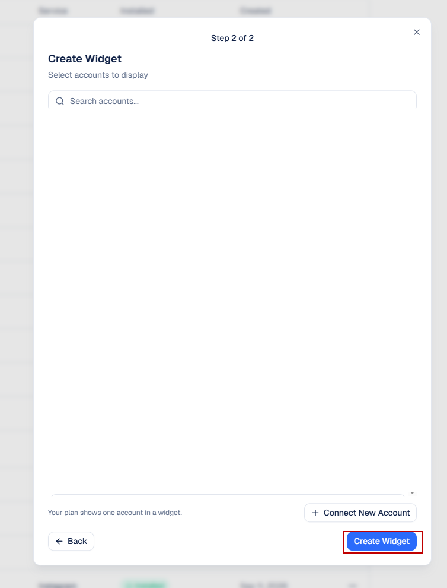
- 이미 연결된 계정이 있으면 목록에서 계정을 선택한 뒤 Create Widget을 눌러주세요.
- 무료 플랜은 한 위젯에 계정 1개만 표시할 수 있습니다.
[Instagram] 선택
Add Account 창에서 Instagram을 클릭해주세요.
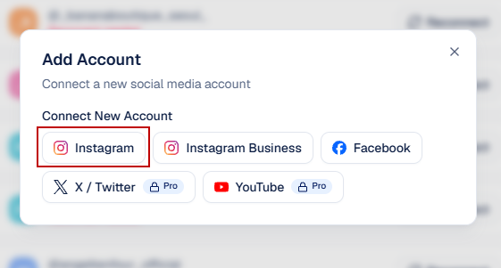
인스타그램 접근 권한 [허용]
인스타그램 로그인 후 아래와 같은 권한 요청 화면이 나타납니다. '프로필 조회 및 미디어 액세스' 항목이 켜져 있는 것을 확인하고 [허용]을 눌러주세요.
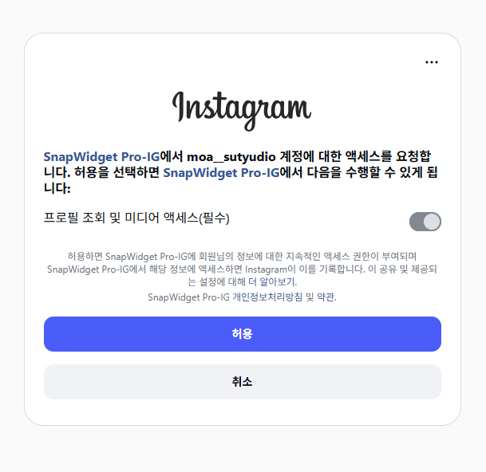
- 연결하려는 쇼핑몰 인스타그램 계정으로 로그인해야 합니다. (다른 계정으로 로그인되어 있지 않은지 확인해주세요.)
- 허용이 완료되면 위젯 편집 화면으로 자동 이동하며, 상단의 Connected Accounts에 계정이 표시됩니다.
위젯 설정 후 코드 복사
위젯의 모양(열·행 개수 등)을 설정하고, 쇼핑몰에 붙여넣을 연동 코드를 복사합니다.
위젯 설정하기 (PC용 / 모바일용)
위젯 편집 화면에서 Basic 탭의 값을 설정합니다. 가장 중요한 항목은 Columns(열)와 Rows(행)이며, PC용과 모바일용을 각각 다르게 설정해 두 개의 위젯을 만듭니다.
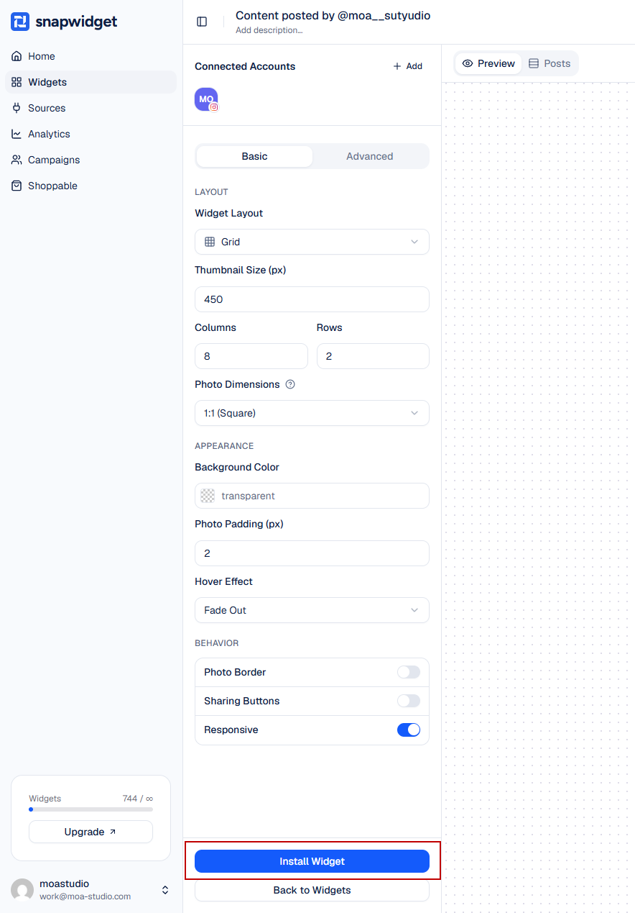
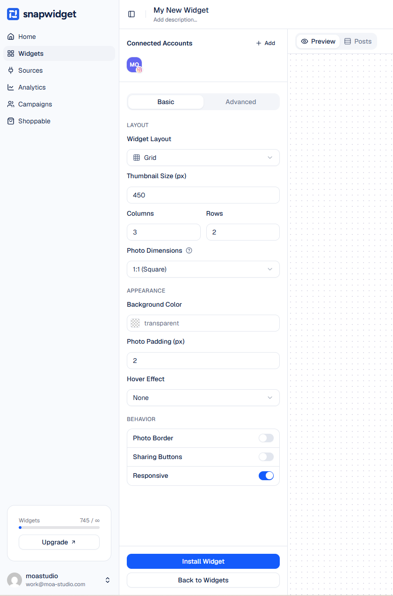
| 설정 항목 | PC용 | 모바일용 |
|---|---|---|
| Widget Layout | Grid | Grid |
| Thumbnail Size (px) | 450 | 450 |
| Columns (열) | 8 | 3 |
| Rows (행) | 2 | 2 |
| Photo Dimensions | 1:1 (Square) | 1:1 (Square) |
| Background Color | transparent | transparent |
| Photo Padding (px) | 2 | 2 |
| Hover Effect | Fade Out | None |
| Responsive | ON | ON |
[Install Widget] 클릭 → [Copy Code]로 코드 복사
설정이 끝나면 화면 왼쪽 아래의 파란색 Install Widget 버튼을 누릅니다. 아래와 같은 창이 열리면 Copy Code 버튼을 눌러 연동 코드를 복사해주세요.
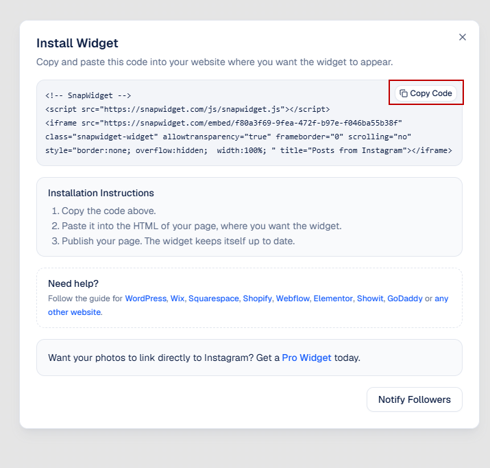
- PC용 위젯의 코드와 모바일용 위젯의 코드는 서로 다릅니다. 각각 복사해서 해당하는 곳에 붙여넣어 주세요.
- 코드는
<script …>와<iframe …>두 줄이 모두 복사되어야 합니다.
배너 매니저에 붙여넣기
복사한 코드를 쇼핑몰 관리자의 배너 매니저 앱에 붙여넣어 메인 페이지에 노출합니다. PC와 모바일은 프로젝트가 다르므로 각각 진행해주세요.
PCPC 위젯 적용
[모아스튜디오 - 밸런스] PC 프로젝트 → '인스타그램 위젯 - PC' 수정
- 프로젝트 목록에서 [모아스튜디오 - 밸런스] PC를 선택합니다.
- [메인페이지] 인스타그램 위젯 - PC 그룹의 '수정' 버튼을 클릭해주세요.
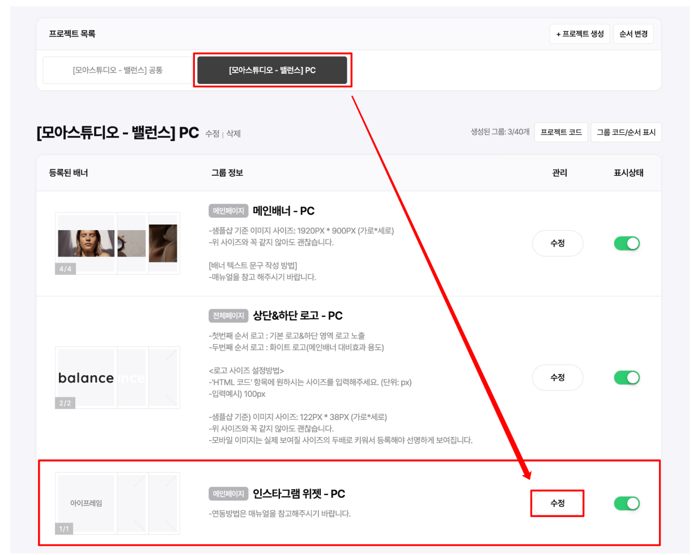
'아이프레임 추가' 클릭 후 PC용 코드 붙여넣기
- '아이프레임 추가'를 클릭해주세요.
- 아이프레임 소스 칸에 STEP 3에서 복사한 PC용 위젯 코드를 붙여넣기(Ctrl + V) 해주세요.
- 하단의 [저장] 버튼을 눌러 마무리합니다.
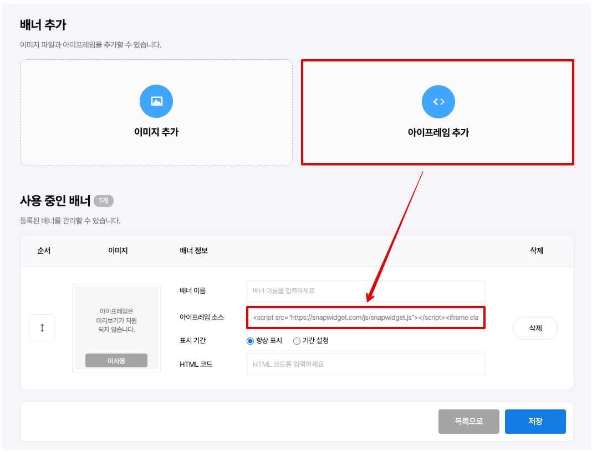
MOBILE모바일 위젯 적용
[모아스튜디오 - 밸런스] 공통 프로젝트 → '인스타그램 위젯 - 모바일' 수정
- 프로젝트 목록에서 [모아스튜디오 - 밸런스] 공통을 선택합니다. (PC 프로젝트가 아닙니다!)
- [메인페이지] 인스타그램 위젯 - 모바일 그룹의 '수정' 버튼을 클릭해주세요.
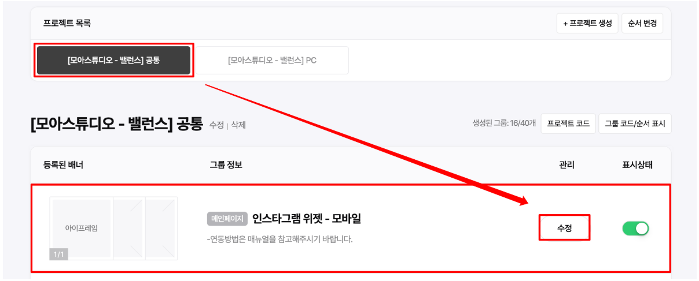
'아이프레임 추가' 클릭 후 모바일용 코드 붙여넣기
- '아이프레임 추가'를 클릭해주세요.
- 아이프레임 소스 칸에 STEP 3에서 복사한 모바일용 위젯 코드를 붙여넣기(Ctrl + V) 해주세요.
- 하단의 [저장] 버튼을 눌러 마무리합니다.
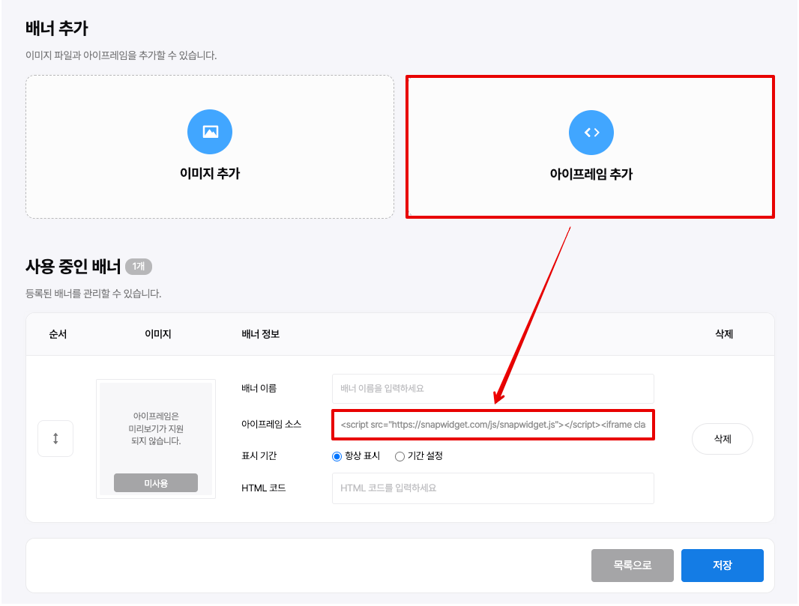
마지막으로 확인해주세요
- PC 프로젝트에는 PC용 코드, 공통 프로젝트(모바일)에는 모바일용 코드가 들어갔나요?
- 각 그룹의 표시상태 스위치가 ON(초록색)으로 되어 있나요?
- 쇼핑몰 메인 페이지를 PC와 모바일에서 각각 열어 인스타그램 게시물이 보이는지 확인해주세요. (바로 안 보이면 새로고침 후 다시 확인)